Neon Knights is a top-down role-playing game set in a cyberpunk city at night. Its first district, District 42, is nine street maps, 144 rooms you can walk into, sixteen kinds of vehicle and 159 named characters who live and work there. Every one of them who speaks has a voice, but not everyone speaks English. Every kind of building has its own unique music. The weather is yours to choose, and one back-street surgeon will talk to you about anything you type.
Very little of it was placed by hand. About a hundred small scripts write the city into its editor, and nearly all of its sound, voice and motion came from open models running on a 16 GB MacBook, one job at a time. This post is a tour of the district and of the tools behind it: what each model was good for, where each one broke, and what I would use again.
| District 42 | Today |
|---|---|
| Street maps | 9, in a 3 x 3 grid, each 50 x 50 tiles, joined at 12 crossings |
| Rooms | 144 across 20 building types, from 37 templates in three sizes |
| Building designs | 93, with fans, neon, steam or water moving on 86 of them |
| Vehicles | 16 models in 87 paint jobs; 21 of them drive |
| People | 159 characters, 57 group scenes, 37 walking routes and 2,592 crowd figures |
| Voices | Every spoken line, from 54 local voices |
| Music | A title theme, 5 district themes and a track for every building variant |
| Weather | Clear, rain, snow, fog and embers, chosen by the player |
Where this started, about fourteen years ago
Around 2012 I built MongoKong, a browser platform that promised anyone could make their own game "as easily as they would a power-point presentation", with level editors in the page and artwork built in. Under the hood it ran on RPG JavaScript Library Beta 1.2.0, written by Samuel Ronce in 2011.
MongoKong stopped. RPGJS did not. Samuel (Sam) has kept the engine going since he first published it in April 2011, through rewrite after rewrite, for fifteen years and counting. Version 5 is the biggest change yet: a TypeScript framework for 2D role-playing games in the browser in which a single-player game becomes an MMORPG by changing a setting rather than rewriting the code, drawn by CanvasEngine, a renderer he also wrote, and deployable to Node or Cloudflare Workers. Alongside it he built RPGJS Studio, which is close to what MongoKong was reaching for: a browser editor for the whole engine, with an API behind it.
What made this project possible is that Sam has embraced AI tools rather than kept them at arm's length, and his own repository shows it: branches opened by Codex, Cursor and other coding agents sit alongside his. The v5 documentation is published in a form a coding assistant can read in full, the engine ships with skills that teach an assistant how RPGJS and the Studio API work (one command installs them), and Studio's API keys let an assistant build maps, events, characters and media directly. Studio generates art too, from characters and face sheets to whole maps. That is the gap MongoKong never closed: an editor a person can use and an agent can drive, built by someone who has spent a decade and a half on the engine underneath it. Neon Knights is what happened when I finally had both.
That is not a claim that Neon Knights is a finished game, or even a good one. The game was never really the point. I wanted to test two things. The first was whether someone who is not an artist could use AI to produce art that works in a game, and the answer is mixed: usable after a lot of cutting, scaling and checking, and rarely right the first time. The second, and more important, was to have a reason to explore more AI models locally. No kind of project touches more of them than a game: narrative, voices, music and sound effects, images, sprite sheets, animation and video. I have learned more about these tools from District 42 than I ever could have from building the Moddable engine, which sits inside it.
A city on a grid
The centre map was built by hand in the Studio editor. Its four neighbours were generated around it on the same street plan: a back row of towers, three bands of buildings each fronted by a pavement and a road, a red-paved avenue, a plaza and alleys running north to south. The roads sit on the same rows on every map, so a road on one carries straight on into the next.
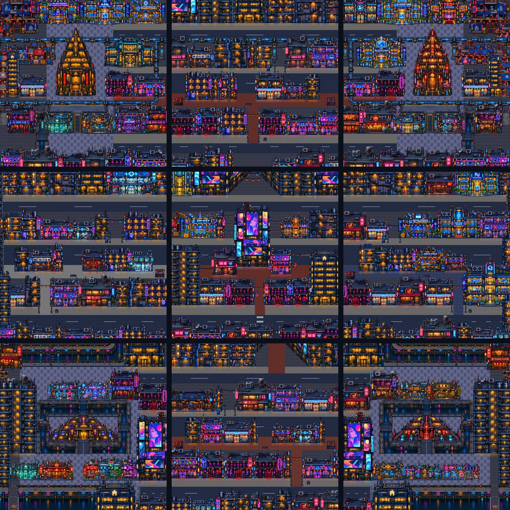
The four corners are where the district ends. Each holds one landmark on a square of plaza stone, and the roads from the next map run in and stop at the square rather than carrying on to an edge, so the city feels closed rather than unfinished.
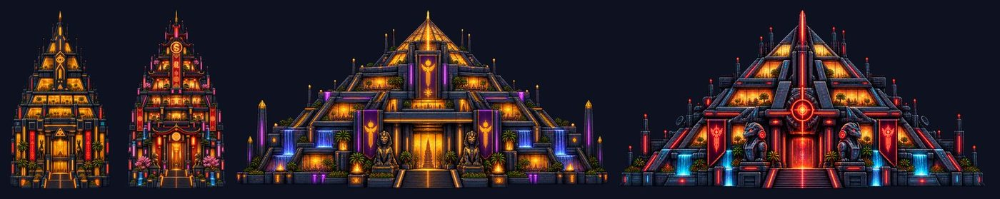
Ninety-three buildings, one scale
Every building is a single image, and every one is drawn to one scale so the city holds together: the hero is about 79 pixels tall and every front door is 88 to 96. Each design also comes mirrored and turned 45 degrees for corners, and the street builder always places the least-used design next, so 93 designs fill nine maps without an obvious repeat. They are grouped into numbered libraries in the editor: food, shops and nightlife; services; homes; towers; hazed backdrops for the far edge of a view; landmarks; canals and the monorail.
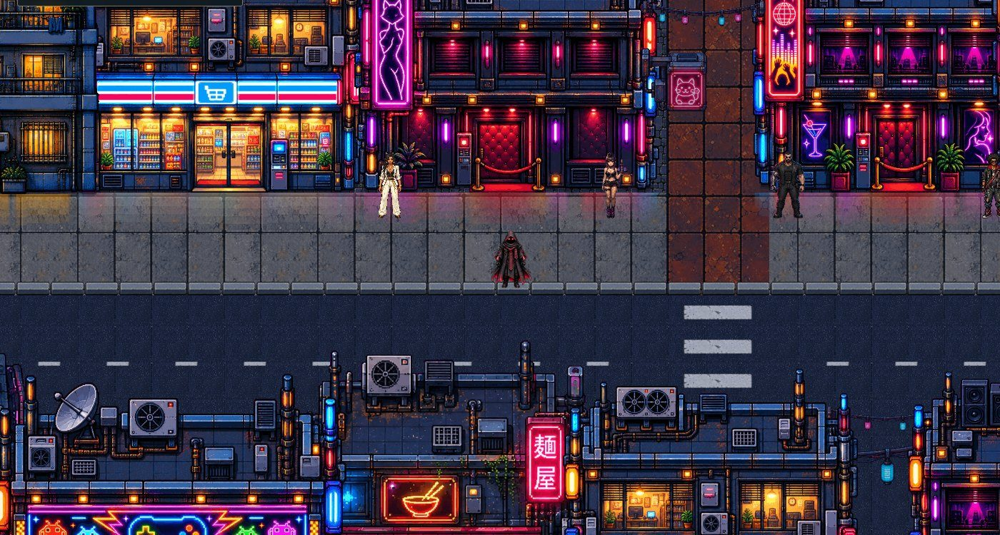
The art is the one part of the city that came from a cloud tool. Each building, prop and character was drawn by ChatGPT's image model from a short prompt per image, then cut out, sized to the city's scale, checked against it and packed into a library sheet by scripts.
Replicating detailed pixel art like these buildings is where image models struggle most. The ground has gone much better, and in the end it needed no image model at all. After trying SDXL locally for seamless textures, the canals were made entirely in code: paving, masonry and water that repeat on the grid, and a corner Wang set (tiles for every way ground, wall face and water can meet) that lays a canal of any shape, with walls that run deep and sink below the waterline. A night colour grade goes over the whole map, then animation brings it back to life: pipes pour into the canals and neon lamps flicker and reflect in the water. These canals and the new roads are still on test maps rather than in District 42, but they are the most promising art in the project.
Sixteen of the landmarks come from my own portfolio: companies, products and events I have worked on, each turned into a building with its name on the front. Thirteen can be entered. Their lobbies share one layout (reception, turnstiles, a lift, display cases) behind a feature wall of their own, from the Blockchain Embassy's flags to the crypto vault's round door and a live request counter in the hackathon hall. Fifteen more are planned.
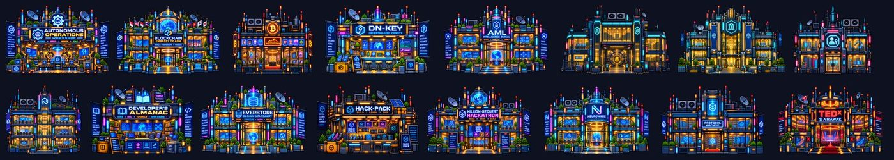
The buildings move, too, in two different ways. Two of them, a cocktail club and a noodle shop, began as stills drawn by ChatGPT and were animated with Kling v3 Omni, a cloud video model. The club alone came back as 121 frames and 66 MB. Cut down to 8 to 18 frames at game size, each is still about 2 MB, and each had to be made for its one design. They look lovely, but at that size this approach cannot scale to a dense city district.
Everything else moves through code, from its own pixels. A script finds the fans, vents, signs and water in a building's art, then animates only the pixels that change: roof fans turn, vents puff steam, canal reflections waver and each neon sign flickers to a rhythm of its own (a buzz, a pulse, a stutter, one dying). That is 666 small effects across 86 building designs, averaging under 9 KB each, so all of them together weigh about as much as three fully animated buildings. The same approach draws the lamps and drain pipes for the new canals. In some ways it beats the full animations: the building stays exactly as drawn, any design can have it, and because the browser draws the effects itself, a street full of them costs almost nothing to run.
Sixteen ways to cross the road and end up in hospital
The vehicle tracker lists 16 models: everyday sedans, vans and compact cars, a taxi and a police car, an armoured transport, an ambulance for the hospital, a noodle truck, a junkyard pickup, a hovercar, a limousine and a supercar. Most come in ten paint jobs, made by tinting one drawing; vehicles with a livery (the ambulance, the armoured transport, the box truck's graffiti panel) keep a single one, because recolouring spoiled it. That is 87 vehicles in all.
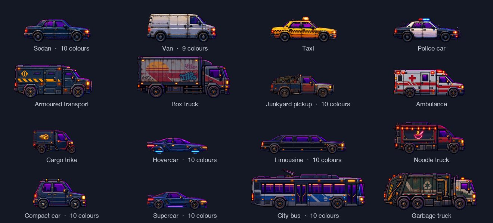
Twenty-one of them drive today: the sedans, vans, the taxi and the police car, one pair to each road. Touching one is fatal, and you wake up in West General Hospital to the intercom welcoming you back. The bus and the garbage truck are longer than the shared car hitbox, so they wait for one of their own before they join the traffic.
Inside 144 rooms
Every building with a reachable door can be entered. Its room is built from one of 37 templates, in a small, medium or large size chosen by the width of the building outside. The door art matches the front of the building, the side walls slope in at 45 degrees so the room reads as a space with depth, and the room is named after the door that leads to it: "ND1 South - CLUB_02 @12,41 - Martini Lounge (S)" is the small martini lounge whose door is at tile 12, 41 on the South map.
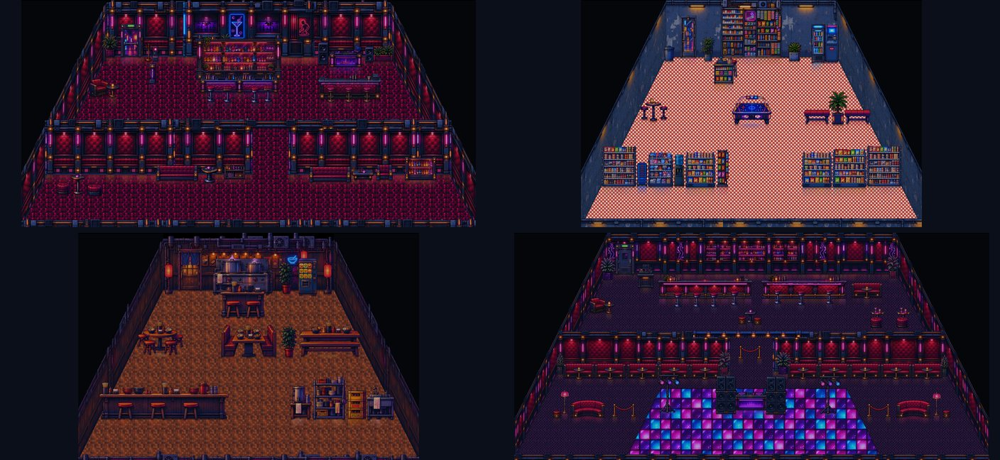
The first rooms were filled at random, and they looked it. So I arranged a handful by hand in the editor (a martini lounge, a kiosk, a small noodle bar and a dance club) and the scripts now compose rooms from those patterns: areas instead of scattered furniture, a back room behind a partition with a doorway, a front room on a floor of its own, and each area's people cast to it. 108 rooms have been rebuilt that way so far. Clinics and landmark lobbies are still waiting for updated templates.
A cast of 159
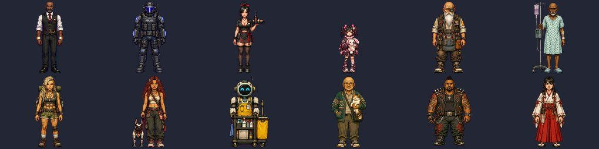
Every building type has a cast of five, from the bartender and the VIP host to the ramen cook, the ripperdoc, the shrine maiden and the landlord, plus street roles such as the busker, the courier and riot police. The roster that keeps track of them lists 159 characters, 57 group scenes, 10 seated scenes and 58 crowd people, each with a picture, a name, a line, a voice and every place they stand. A casting step puts them where they belong, with two rules everywhere: one of each character per area, and anyone with a conversation appears only once in the whole game.
| Character | Introduces themselves | Speaks |
|---|---|---|
| Kenji, ramen cook | "Forty years at this pot. The broth is ready when I say it is ready." | Japanese |
| Glitch, hacker | "I fix phones by day and borrow other people's passwords by night." | English |
| Mrs Kapoor, repair customer | "My phone only shows the weather on Mars now. Can someone please fix it?" | Hindi |
| Master Liu, old engineer | "I built the first lifts in these towers. Most of them still remember me." | Mandarin |
| Uncle Lau, xiangqi player | "Every evening, same table, same rival. We have played nine thousand games. I lead by four." | Mandarin |
Scenes are small groups drawn together (a couple at a booth, a dice game, a food queue, drinkers at the bar), with seated people drawn without their seat so they sit on the room's own furniture. Characters who hold conversations get a face sheet with twelve expressions.
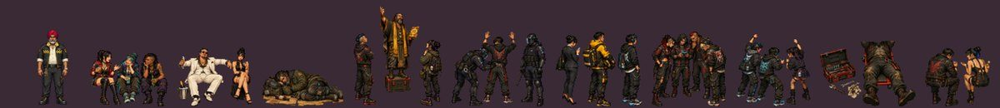
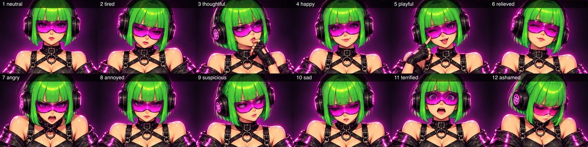
People walk on every street map, 37 of them, two to seven per map, on routes planned against the map's real collision so they keep off the roads and never pass behind a building. The people who stand still breathe, their upper body rising a pixel or so and settling.
Walk cycles took three routes, with mixed results. Studio's own generator makes the most convincing strides, one direction per request, but it costs credits per character and draws its walking frames smaller than the standing ones, so a character shrinks when it sets off. ChatGPT came out stiff when asked for all four directions at once and more usable when asked for one at a time, as with the Shaman; a script then stitches the directions into a sheet the size of the standing picture. Neither scales to a cast of 159, so I tried a local route that uses only the art we already had.
The first local try was a puppet: cut each standing picture at the hip and swing the legs. It needed no model, and it moved whatever hung below the hip, so hands were cut off, held mops bent and side views showed four legs. The second uses SAM 2, Meta's segmentation model, run locally, to cut the legs and the near arm out as layers that swing about the hip while everything else stays rigid, so Bottle Girl's tray of drinks stays level in her hand. It is an improvement, but every local walk still has problems somewhere, and the Drunk Salaryman still walks on four legs. The walks generated online have their faults too. Without each part of the body drawn as its own layer at the source, none of these routes fully works, and Studio's own generated walks are still clearly better than everything else. None of the 104 puppet sheets made it into the game; 18 of the 23 walk sheets the city's walkers use are layered.
Rooms need crowds, and a room full of the same person looks wrong. Crowds are built from kits: a few plain base figures, then every combination of outfit colour, hair colour, skin tone and a small detail such as a mask, a radio, an IV pole or a bouquet. The medical kits alone give 2,592 different figures, facing all four ways.
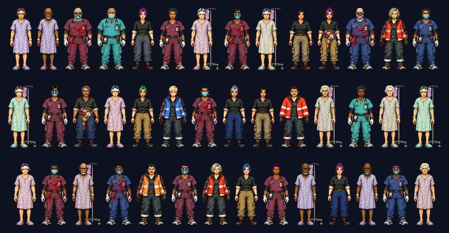
Weather on request
The city starts clear. The weather belongs to the Shaman, who stands by the shrine in the West and asks what the sky should do: clear skies, rain, or "something wilder", which opens snow, fog and an apocalyptic sky of falling embers. Nobody tells you this directly. Four people around the district drop hints instead: a tourist who asked for fog and "got the best photos of my trip", a street preacher who insists "even the sky answers to someone", a woman in a bun queue and the old keeper of the pagoda's lanterns all give directions to the west.
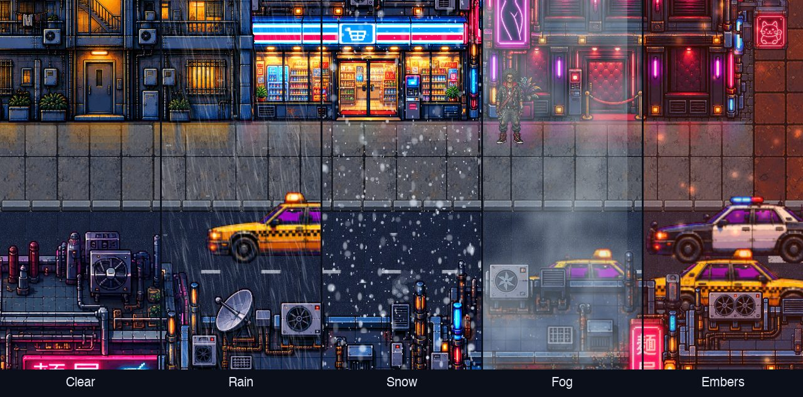
Studio keeps weather per map, so making it follow you took a workaround built from what its events can do. The Shaman sets a Weather variable. Every street map and room carries one invisible event that runs about once a second: on the streets it shows the weather in force, and everywhere it replays an 18-second sound loop every 16 seconds, so the joins overlap rather than leave a gap. Rooms stay dry on screen and play the muffled version, so inside a building the rain sounds like it is on the roof.
Sound effects that check their own work
Stable Audio Open made the city's sound library: 45 effects, from arcade bleeps to pipes knocking behind a wall, one prompt per sound. A prompt naming five sounds gets the first one or two, so every sound got its own. Generating them was the easy part. Knowing whether a sound matched its description was not, so a second model listens to them. CLAP scores each sound against every prompt in the library, and a sound is only kept if its own prompt ranks near the top. On the first run 35 of the 45 did; the other ten got sharper prompts and another try.
The kept sounds are layered into 16 ambient beds, one per building type plus rain, dry, siren-heavy and quiet street versions, and every map has its own.
Music: the model that taught me to use a DAW instead
The plan was to generate music with MusicGen. Guided generation sounded polished, unguided sounded distorted, and guided generation stalled outright at 30 seconds on my machine (reproduced twice, over half an hour each, while 20 seconds took about a minute). Building tracks from short sections, each conditioned on the last one's melody, kept the key and tempo but produced clips that repeated without going anywhere.
What worked was taking the model out of the loop for the final audio. Each building track is now a song plan in JSON (chords, patterns and sections), written out as an LMMS project from a free soundfont and my own sample library, then rendered headless. A DAW project has an exact tempo, key and bar count, so the loop is seamless by construction, and the track can still be opened and edited by hand. Every track is in D minor or a close relative and quotes the same four-note city motif, D-C-A-F, somewhere in its melody, bass or bells. Within that, every building is a different genre, so walking from a jazz lounge into a chiptune arcade sounds like a change of place rather than a change of game.
| Building | Track style | Listen |
|---|---|---|
| Lounge bar | Jazz noir lounge | 30 s |
| Dance club | Deep house | 30 s |
| Arcade | Chiptune | 30 s |
| Noodle bars | Lo-fi hip hop with koto, an enka-style ballad, city pop funk, dub | 30 s |
| Kiosks | Old swing and kayokyoku pop on a tinny radio | 30 s |
| Repair shops | Glitch IDM, industrial funk, Berlin-school sequencer | 30 s |
| Hospital | Minimal piano | 30 s |
| Apartments | Trip hop, soul through the walls, lo-fi bedroom, acoustic folk | 30 s |
| Shrine | Shakuhachi and synth drone | 30 s |
The clubs add one more layer. Four DJs around the district each spin three tracks from DJ Kaspa's Destinations Unknown on request, and DJ Neon holds the thirteenth. Every track you choose is counted, and hearing all thirteen is rewarded. Two more characters, an archivist in the pyramid and a guard at the fortress gate, point players towards the collection.
A voice for every line
Kokoro is an 82-million-parameter text-to-speech model, small enough to run alongside everything else and quick enough to speak a line in about two seconds. I measured and catalogued all 54 of its voices and gave every speaking character one. Thirty-three of them introduce themselves in their own language (Japanese, Mandarin, Hindi, Spanish, Portuguese, Italian or French) under English text, so the ramen cook speaks Japanese and the taxi driver Hindi. Twenty-five robots, cyborgs, guards and mystics go through local effects (vocoder, ring modulator, radio, a public address, a hall) so they do not sound like everyone else.
Lines that belong to no character got a voice by job: a narrator for car crashes, the hospital intercom when you wake up after one, the City asking at each door ("Enter Centre Mart?") and the System announcing unlocks. The rule that came out of this was simple: if text appears on screen, someone says it. Once most of the city was voiced, the silent lines stood out immediately.
A title screen from one still image
The title art is a single image of a hooded figure on a rooftop over the city. To make it move without a video model, Depth Anything V2 Small estimates how far away every pixel is, in a few seconds. That splits the picture into a near layer (the figure, the roof, the tower beside them) and the city behind. The gap the figure leaves is filled in, and the two layers move at different speeds as the camera drifts towards the rooftop and back. Rain, drifting haze and flickering neon go on top: 197 signs pulse, some like failing tubes, and 1,400 small window and tower lights blink, breathe or switch off for a moment. Every motion repeats a whole number of times in ten seconds, so the loop has no seam.
I also tried cars: light streaks along the elevated road and the bridge. They looked fake, so they came out. Flicker made the city feel lived in; traffic made it feel animated.
Size settled the format. As a GIF the loop was 93 MB; as an animated WebP, 7.7 MB; as an MP4, 4.3 MB. Studio's title screen takes the animated WebP, and the browser build shows a still of the first frame at once and fades the video in once it can play through.
Characters who answer back
Fixed lines are only half of a voiced city. The other half is a character who answers what you actually said. Locally, that is a small language model and Kokoro together: Qwen3 4B through Ollama writes the reply in a character's persona and Kokoro speaks it, in about five seconds once the model is loaded. Asked "Can you make it stop raining? My jacket is soaked", the Shaman replied: "The west wind stilled the rain. Clear skies now. Your jacket dries." No network calls, no credits.
A browser game cannot ship a laptop, so the version you can play uses the closest cloud equivalent. In the back-street clinic in the south of the district, the Ripperdoc greets you, then opens a conversation window. Type anything and the reply comes back in their own words and voice in a second or two: Workers AI runs a 3-billion-parameter Llama for the words and MeloTTS for the voice, behind the same Cloudflare Worker that serves the game. Each reply costs roughly six to ten "neurons" against a free allowance of 10,000 a day, so the character is free to run at the scale a side project needs.
The persona lives on the server, so a player cannot rewrite who they are talking to. It knows the story so far: you woke up with a Neuroware implant whose subscription renews in under 24 hours, and you have no credits. What it does not yet know is enough about the world, and it fills the gaps with confidence. Asked about the implant's upgrade, it quoted a price nobody had decided. Everything in this post (the map, the roster, the rooms, the vehicles) already exists as data, so the next job is to give the conversation the same sources of truth, and let every voice, line and reply draw from one place.
Games inside the game
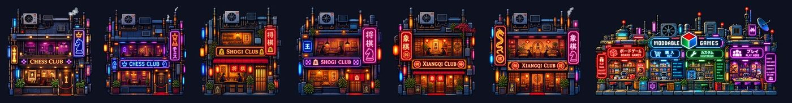
Six game clubs hold real board games, played on the Moddable engine in a panel over the map. Every seated player offers a game, and each table plays its own: standard chess, standard xiangqi and 22 variants, from Torpedo and Glinski's hexagonal chess to three-player Yalta, Congo, Janggi and Chu shogi. Each player introduces their variant and its history in their own voice, and the game keeps count of every table you beat.
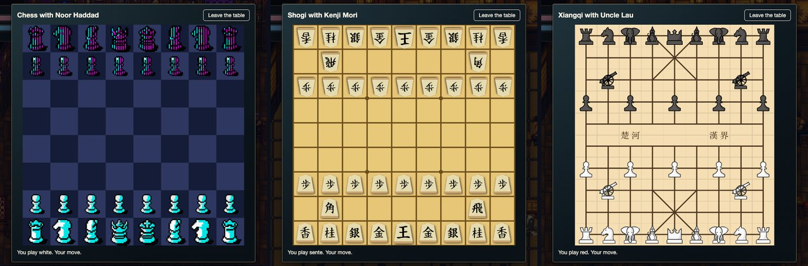
Keeping it walkable
All of this has a cost in the browser. The browser build slowed with every map visited until it was almost unwalkable, because every map kept running after you left it. The fix was to stop the work rather than speed it up: one copy of each map, closed a few seconds after you leave, and decorations drawn by the browser instead of simulated as characters. Over the same 15-minute walk, timers fell from 6,800 a second to 226 and peak memory from 2.3 GB to 0.65 GB. Each fix is written up for the engine's author.
What I would use again
Write the city as data. The street plan, the rooms, the cast and the vehicles all live in files that scripts turn into maps. That is what let nine maps be rebuilt in one go when the plan changed, what renders every overview in this post, and what a conversation model can now be pointed at.
Use a model to check a model. CLAP judging Stable Audio's output caught nearly a quarter of the sound library before I had to listen to it. Generation is cheap; knowing what to keep is the real work.
Let the model write the plan, not the product. MusicGen could not hold a seamless 60-second loop. A song plan rendered by a DAW can, and it stays editable. The title screen works the same way: a model supplies the depth, ordinary code supplies the motion, and the loop is exact.
Small models, one at a time. On 16 GB, an 82-million-parameter voice, a 4-billion-parameter conversation model, a segmentation model and a small depth model all fit. The heavy generation jobs cannot run side by side, so they ran one after another with the laptop kept awake, and that did more than any bigger model would have.
What is still missing
Plenty. The list below comes from the project's own issues and is longer than the list of what works.
Pixel art that behaves like pixel art. This is where local models fall furthest short. A model paints an impression of pixels: edges drift off the grid, palettes run to hundreds of near-identical colours, and nothing comes apart into pieces. A game needs the opposite. Every sprite stamped to a known pixel size, a confined colour set, and every pixel serving a purpose on a layer of its own, so a leg can move without repainting the body. That gap is why the local walk cycles fell apart, and why Studio's generated walks still win.
Buildings that match the ground. They were drawn before the Wang tile sets that now pave the streets and line the canals, and they no longer sit comfortably beside them. I am hoping to redo all of them, or find a new approach to buildings that goes with the new sets, though the first prototypes have not been successful yet.
Interiors, half done at best. The rooms rebuilt from templates are the better half, and even they are sparse: about 600 seats and only a handful of people sitting in them. Staff do not yet stand behind their bars and desks, the people inside breathe but never walk, and nothing indoors moves. None of the code-drawn signs, fans and steam that bring the streets to life has made it inside yet.
Every game the engine can play. The clubs hold chess, shogi and xiangqi today. The Moddable engine plays 313 variants across 30 families, and every one of them should be found somewhere in the city: dice players on street corners with craps, Farkle and liar's dice, card sharks running blackjack and bridge, a poker den in a back room, mahjong parlours, backgammon in the bars, and draughts, Go and Reversi in the parks.
Landmarks that do what they stand for. The portfolio landmarks have names and lobbies but none of the ideas behind them, and fifteen more are still to draw. DN-Key should hand out a decentralised identity, an inscription house should inscribe, and a wallet should carry the player's credits, so trading items, escrow and payments between players (and agents playing as players) become part of the city rather than a pitch.
A city that moves on its own. People walking from door to door and vanishing inside, more cars per road, monorail trains that actually stop at the platform (four attempts so far), and weather that reaches the buildings, with snow on the roofs and wrecks for the apocalyptic setting.
Height and distance. Terraced streets joined by stair-streets, raised and sunken plazas and skybridges in place of today's ramps, and maps where the player controls travel as a ship between cities.
Conversations for more of the cast. Every line in the city is voiced, but live conversation reaches one character so far: the Ripperdoc.
The rest of the original plan. Two parts of the six-part series are still only plans: procedural progression, with maps that change with the paths taken, and the business side, with agents playing alongside people and payments inside the game.
Why build it at all
Neon Knights opens with a player who has zero credits and under a day to find work before they are cut off from the city. The game's subtitle, The Crusade of the Unemployed, is closer to home than I would like. The game was never the product. It was always about improving my workflows and learning what local models can and cannot do on a laptop, which is what I will take into whatever comes next.
District 42 is playable in the browser. Ask the Shaman for snow, then go and find the Ripperdoc.
Most importantly, rather than vibe coding a new game from scratch, give RPGJS Studio a go and build something you can edit and expand on yourself, without needing to understand the code.